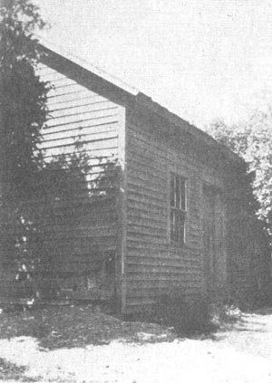
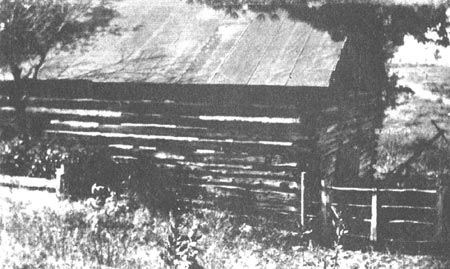

Above: “Smith’s,” about 3.5 miles northwest
These two old buildings, crumbling to decay [circa 1920], were used in the 1880’s as houses of worship by the saints at and around Grand Junction, Michigan.
Below: “Log house,” about the same distance northeast
